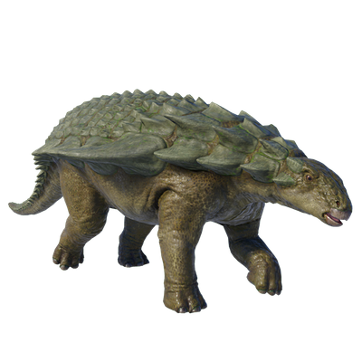

Useful Website
Nodosaurus is a genus of herbivorous ankylosaurid notable for the raised armour plates that cover its back – its name translates to ‘knobbed lizard’. Adults can grow up to 5m in length and weigh in excess of two tonnes, consuming vast quantities of plants and shrubs every day. Its armour plates are essential for protecting Nodosaurus from predators, as its short legs and heavy frame mean that it is unable to reach high speeds to escape.
